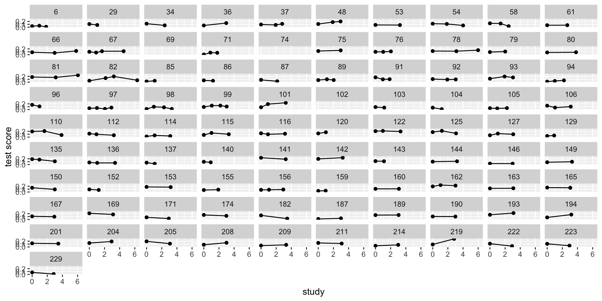
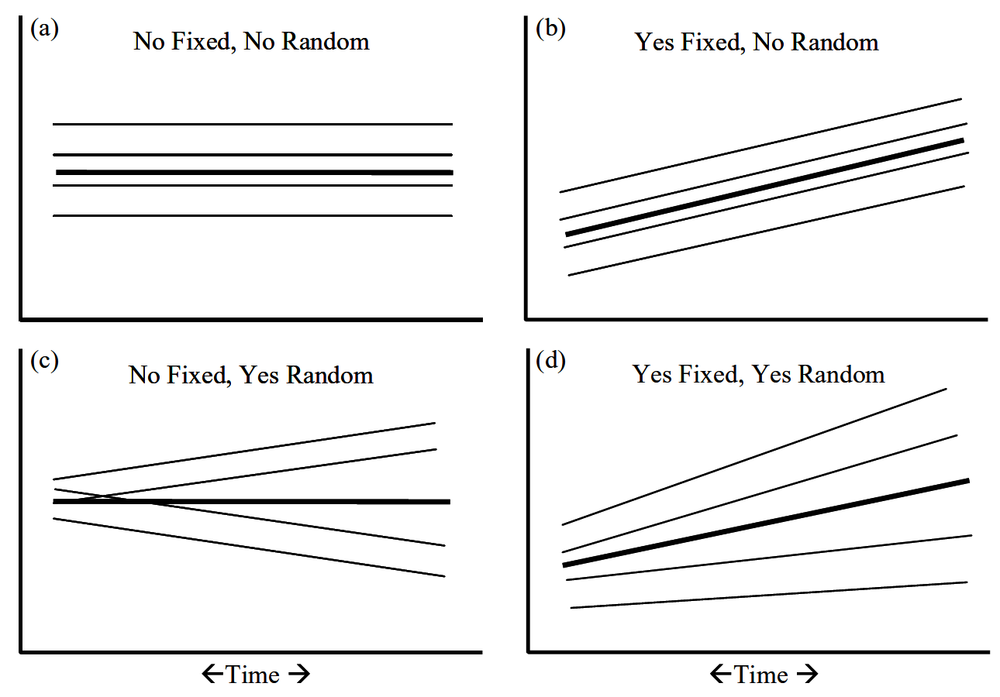
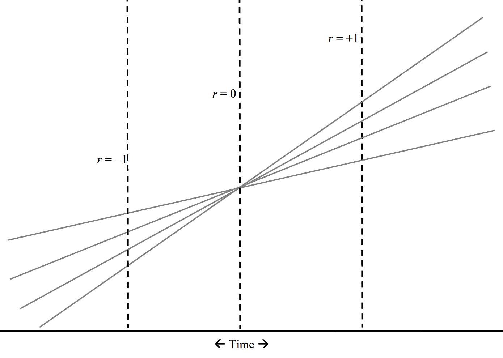

\[{Y}_{ij} = b_{0} + b_{1}X_{ij} + ... +\epsilon_{ij}\] Where j refers to some clustering or grouping variable and i refers to the observations within j
\(U_{0j}\) is considered a random effect, as it is varies across our grouping
\(\gamma_{00}\) is considered a fixed effect, as it is what is fixed (average) across our grouping
Level 1 predictors
Level 1 is where you have data that repeats within your grouping or clustering data. Is your cluster classrooms? Then students are level 1. Is your cluster people? Then observations are level 1.
\[{Y}_{ij} = \beta_{0j} + \beta_{1j}X_{ij} + \varepsilon_{ij}\] Notice on the subscript of X that these predictors vary across group (j) and within the group (i) So if your grouping (j) is people, then i refers to different observations.
For longitudinal data, level 1 refers (mostly) to within-Person (WP) Variation, Level-1, aka INTRA-individual, aka Time-Varying,
Observations are NESTED within person
Level 2 takes the parameters at level 1 and decomposes them into a fixed component ( \(\gamma\) ) that reflects the average and, if desired, the individual deviations around that fixed effect (U).
Can think of a persons score divided up into a fixed component as well as the random component.
\[{\beta}_{16} = \gamma_{10} \pm U_{16}\]
Level 2 referes to Between-Person (BP) Variation, INTER-individual, Differences, Time-INvariant, make comparisons across individuals.
Some variables can be both depending on how you measure them. E.g. Age
Level 1 and Level 2 can be differentiated in your dataset by which one repeats vs which is consistent.
Error structure
The residual structure, where the random effects are again normally distributed with a mean of zero, but this time one must also consider covariance in addition to variance.
Level 2 predictors on the intercept can also be thought of a simple regression. Here the level 2 DV are group-level (person) means when the level 1 predictor = 0. That’s because it is the intercept!
The intercept of this regression is the fixed effect, or population average of the level 1 intercept.
The regression coefficient for the intercept can be interpreted the same as a normal regression
As a rule, each level-1 predictor is really 2 predictor variables. It is important to separate within-group from between group variance. Failing to do so will “smush” between and within variance to level 1.
Example: student SES at level 1, with schools at level 2. Some kids have more money than other kids in their school Some schools have more money than other schools
If you have data like this you should analyze like this! If you don’t, then you are losing information (GEE being a potential exception).
The question often is about which random effects to fit. There are multiple opinions, but mine is to start maximum, and then work downward (ie simplify) if necessary/consistent with theory. It doesn’t really hurt to include them, especially with new estimation advances (Bayesian estimation)
MLM intuitions
Anytime you have repeated DVs you should use MLM as opposed to doing aggregation outside the model. While that should be your default, it is helpful to conceptualize why it is helpful.
Aggregation is bad
Regressions within regressions (ie coefficients as outcomes)
Questions at different levels
Variance decomposition
Learning from other data through pooling/shrinkage
Handling multiple DVs?
What if people had more than 1 DV, like we do with time? What do you do with multiple items, multiple trials, multiple _____?
Between person H1: Do students who study more get better grades?
Within person H2: When a student studies, do they get better grades?
H1 and H2 are independent from one another! Aggregation collapses the two. When you have nested data with many DVs it is important to not aggregate.
#compositeskill
2. Regressions within regressions
Helps to take multilevel and split it into the different levels.
Level 1 is the smallest unit of analysis (students, waves, trials, family members)
Level 2 variables are what level 1 variables are “nested” in (people, schools, counties, families, dyads)
We are going to use level one components to run a regression, all the while level 1 is also estimating a regression. (Coefficents as outcomes)
Stroop example
We calculate stroop scores by looking at repeated trials of congruent vs not congruent. This is dummy coded such that the \(\beta_{1}\) reflects the average stroop effect. How much slower are people in incongruent trials?
Our B1 coefficient indexes the stroop effect. However, people differ on this stroop effect. There is some average effect (fixed effect) that people vary around. Each person has some personal \(\beta_1\), which we find using Level 1 data. From there we can also ask questions (with regressions) about that random variable.
To sum up the first two ways to think about regression, we take a relationship that could be simplified by aggregation, and conduct regressions from regressions. (Regression inception)
The third way is to think of questions at different levels. At level 1 we can ask lower-unit questions e.g., if trials are nested within person, what predicts lengthier trials?
If level 1 is made up of repeated observations, then we can ask level 1/observation level questions like does failure at the trial level impact future trial performance.
At level 2 we can ask broader-unit questions. E.g., is age associated with stroop differences
Often level 2 is between person variables.
Both levels are simple regressions. Level 2 uses coefficients from level 1 as DVs. Level 1 variables are time varying, level 2 variables are time invariant
4. Variance decomposition
For standard regression, we think of error as existing in one big bucket called \(\varepsilon\) . Everything that we do not know goes into that bucket, from measurement error to unmeasured important factors.
For MLMs we will be breaking up ( \(\varepsilon\) ) into multiple buckets. These useful “buckets” (Us) are what we refer to as random/varying effects.
Assume a simple intercept only model where we aggregate across types of trials.
A MLM intercept only model takes what was previously chalked up to error and reassigns it into person specific “buckets”
Model for the means (like normal) and now we have a model for the variance (random effects!)
We will treat random effects as variables themselves e.g. individual differences in reaction time or stroop effect. They index how much people DIFFER on some effect. e.g. does everyone show the same stroop effect?
We can relate the random effects to other random effects e.g., do people who show an effect have a slower reaction time?
Random effects used to be error, but they are going to be useful going forward.
We will treat them as variables themselves e.g. individual differences in how people change
They index how much people DIFFER on some effect. e.g. does everyone change the same, or are there differences in how people change?
We can relate the random effects to other random effects e.g., do people who increase on X also start higher on X.
5. Shrinkage/partial pooling
We treat our group variable as coming from a population. All groups are alike (because they are from the same population), but different in their own way. Because of this it is helpful to use information from other groups to help make predictions.
We do this in standard regression where we make predictions based on values from the whole dataset (not just binned Xs). A similar analogy for MLM is running a regression for each group. We want to pool as this leads to better predictions as we are not over fitting our data!
If we take our simplified stroop effect model (an empty model)
Where does \(U_{0i}\) come from? If we calculated each by hand, through taking the average reaction time for a person i and subtracting that from the grand mean reaction time, would that equal \(U_{0i}\) ?
Complete, partial and no pooling
Complete assumes everyone is the same, with \(U_{0i}\) being zero for everyone.
No pooling is if we calculate every person’s effect with a regression, subtracting out he grand mean average.
Partial pooling is in the middle, a weighted average between the two. For those with fewer trials there is less information for a particular individual, thus the complete pooling estimate will be given more weight. If someone has a lot of data, there weighted average is closer to no pooling.
Partial pooling prevents both over and under fitting of your data, leading to increased out of sample predictions.
Complete pooling
Ignores any dependency. Doesn’t learn from others, assumes everyone is the same. Underfits the model.
Everyone is unqiue and we cannot learn from others. Leads to overfitting
Code
ggplot(mlm, aes(x = week, y = SMN7, group = ID)) +geom_line() +geom_point() +facet_wrap( ~ ID) +ylab("test score") +xlab("study")

Partial pooling aka shrinkage aka regularization
Code
library(viridis)ggplot(mlm, aes(x = week, y = SMN7, group = ID, colour = ID)) +stat_smooth(method ="lm", se =FALSE, alpha = .5) +scale_color_viridis()+ylab("test score") +xlab("study amount") +geom_point()
Partial pooling aka shrinkage provides the optimal amount of learning from others. Assumes people come from the same distribution but are distinct from one another.
If you have a little data, then the safe bet is to look at the average. If you have a lot of data, you can ignore others.
In a way, this is similar to Bayesian reasoning where learning is based on how much information you have about a person with other people serving as a prior.
Basic Longitudinal Models
To keep with the book, we are going to discuss DVs that take on different values at each timepoint t, for individual i \({Y}_{ti}\) Other naming schemes are equivalent such as the same \({Y}_{ij}\) where i’s are nested in j groups.
Akin to ANOVA if we treat \(U_{0i}\) as between subjects variance & \(\varepsilon_{ti}\) as within subjects variance.
\(\gamma_{00}\) is fixed or constant across people
\(U_{0i}\) is random or varies across people
ICC
Between version variance over total variance. If the ICC is greater than zero, we are breaking standard regression assumptions as this is an index of dependency.
\[\frac{U_{0i}}{U_{0i}+ \varepsilon_{ti}}\]
ICC can also be interpreted as the average (or expected) correlation within a nested group, in this case a person. On other words, the ICC is the correlation between any person’s repeated measures (technically residuals).
GSOEP EXAMPLE
Code
library(plyr)library(tidyverse)library(tidybayes)library(psych)library(lme4)library(brms)codebook <-read.csv("https://raw.githubusercontent.com/josh-jackson/longitudinal-2021/master/codebook.csv")codebook <- codebook %>%mutate(old_name =str_to_lower(old_name))old.names <- codebook$old_name # get old column namesnew.names <- codebook$new_name # get new column namessoep <-read.csv("https://raw.githubusercontent.com/josh-jackson/longitudinal-2021/master/soepdata.csv") soep <- soep %>%# read in data dplyr::select(old.names) %>%# select the columns from our codebooksetNames(new.names) # rename columns with our new namessoep <- soep %>%mutate_all(~as.numeric(mapvalues(., from =seq(-1,-7, -1), to =rep(NA, 7), warn_missing = F)))soep_long <- soep %>%pivot_longer(cols =c(-contains("Procedural"), -contains("Demographic")),names_to ="item", values_to ="value", values_drop_na =TRUE) %>%left_join(codebook %>%select(item = new_name, reverse, mini, maxi)) %>%separate(item, c("type", "item"), sep ="__") %>%separate(item, c("item", "year"), sep ="[.]") %>%separate(item, c("trait", "item"), sep ="_") %>%mutate(value =as.numeric(value), # change to numericvalue =ifelse(reverse ==-1, reverse.code(-1, value, mini = mini, maxi = maxi), value))b5_soep_long <- soep_long %>%filter(type =="Big 5") %>%group_by(Procedural__SID, trait, year) %>% dplyr::summarize(value =mean(value, na.rm = T)) %>%ungroup() %>%left_join(soep_long %>%select(Procedural__SID, DOB = Demographic__DOB, Sex = Demographic__Sex) %>%distinct())
str(b5_soep_long)
tibble [151,186 × 6] (S3: tbl_df/tbl/data.frame)
$ Procedural__SID: num [1:151186] 901 901 901 901 901 901 901 901 901 901 ...
$ trait : chr [1:151186] "A" "A" "A" "C" ...
$ year : chr [1:151186] "2005" "2009" "2013" "2005" ...
$ value : num [1:151186] 4.67 4.33 4.67 5 5 ...
$ DOB : num [1:151186] 1951 1951 1951 1951 1951 ...
$ Sex : num [1:151186] 2 2 2 2 2 2 2 2 2 2 ...
tibble [22,098 × 10] (S3: tbl_df/tbl/data.frame)
$ Procedural__SID: num [1:22098] 901 901 901 2301 2301 ...
$ year : chr [1:22098] "2005" "2009" "2013" "2005" ...
$ DOB : num [1:22098] 1951 1951 1951 1946 1946 ...
$ Sex : num [1:22098] 2 2 2 1 1 1 2 2 2 2 ...
$ A : num [1:22098] 4.67 4.33 4.67 5.67 5.67 ...
$ C : num [1:22098] 5 5 5 5.67 5 ...
$ E : num [1:22098] 5 5 5 5 4 ...
$ N : num [1:22098] 4 4.67 4.33 4.33 5.33 ...
$ O : num [1:22098] 4 4 3.33 4.33 5 ...
$ ID : Factor w/ 16719 levels "901","1202","2301",..: 1 1 1 3 3 3 4 4 4 7 ...
mod.1<-lmer(C ~1+ (1| ID), data=b5_long)
summary(mod.1)
Linear mixed model fit by REML ['lmerMod']
Formula: C ~ 1 + (1 | ID)
Data: b5_long
REML criterion at convergence: 42780.9
Scaled residuals:
Min 1Q Median 3Q Max
-6.2878 -0.4450 0.0563 0.4186 4.7465
Random effects:
Groups Name Variance Std.Dev.
ID (Intercept) 0.1379 0.3713
Residual 0.3008 0.5485
Number of obs: 22081, groups: ID, 8565
Fixed effects:
Estimate Std. Error t value
(Intercept) 4.760256 0.005478 868.9
# .fitted = predicted values# .resid = residuals/errors# .fixed = predicted values with no random effects
Predicted scores
Predictors are super important for evaluating our model as well as graphing. Lots of packages have these capabilities. My favorites are tidybayes (for brms), marginaleffects (for all), modelbased (for all) and insight both from easystats.
These extend the flexibility of predict (base) and similar functions from emmeans
This model is helpful in producing the simplest longitudinal model, one where it states: there is an average value \(\gamma_{00}\) that people differ along \(U_{0i}\) . Because time is not in the model it assumes people do not change. \(\varepsilon_{ti}\) reflects variation around each person’s predicted score ( \(\gamma_{00} + U_{0i}\) ).
transitioning to longitudinal applications
We are going to fit a simple longitudinal model: a growth model. Growth model is just a fancy term for including TIME as our level 1 predictor where we are now creating lines for each person.
A predictor in level 1
Level 1 is where you have data that repeats within your grouping or clustering data. Is your cluster classrooms? Then students are level 1. People will be our cluster and observations are level 1.
Notice on the subscript of X that these predictors vary across cluster (i) and within the cluster (t) So if your clustering (i) is people, then t refers to different observations.
Level 2 takes the parameters at level 1 and decomposes them into a fixed component ( \(\gamma\) ) that reflects the average and, if desired, the individual deviations around that fixed effect (U).
Because we have a level 1 time predictor in the model, we are now asking the question, how does time influence scores on our DV? Because all regressions are linear by default, it asks if there is an association such that as time increases does the DV? This describes a trajectory.
By including random effects (U) you making a claim that every group/cluster does not have the same \(\gamma\) ie intercept/regression coefficient.
An advantage of MLM is to separate more “buckets” of variance that are unexplained. What was originally \(e_{ti}\) is now ( \(U_0\) + \(U_1\) + \(e_{ti}\) ). This additional decomposition of variance is beneficial because you are separating signal from noise, translating what was noise \(e_{ti}\) into meaningful signal ( \(U_0\) , \(U_1\) , etc).
E.g., multiple responses per person can identify individual differences that normally would be chalked up to error. If you parse out this error your signal becomes stronger.
person predictions
Can think of a persons score divided up into a fixed component as well as the random component.
\[{\beta}_{1.26} = \gamma_{10} \pm U_{26}\] Also call BLUPs or empirical bayes estimates
slope example
mod.2<-lmer(C ~1+ year + (1| ID), data=b5_long)summary(mod.2)
Linear mixed model fit by REML ['lmerMod']
Formula: C ~ 1 + year + (1 | ID)
Data: b5_long
REML criterion at convergence: 42793.8
Scaled residuals:
Min 1Q Median 3Q Max
-6.2995 -0.4572 0.0548 0.4152 4.7573
Random effects:
Groups Name Variance Std.Dev.
ID (Intercept) 0.1378 0.3712
Residual 0.3009 0.5485
Number of obs: 22081, groups: ID, 8565
Fixed effects:
Estimate Std. Error t value
(Intercept) 4.752544 0.007566 628.165
year2009 0.009782 0.008756 1.117
year2013 0.014584 0.009773 1.492
Correlation of Fixed Effects:
(Intr) yr2009
year2009 -0.621
year2013 -0.565 0.488
b5_long<- b5_long %>%mutate(year =as.numeric(year))mod.3<-lmer(C ~1+ year + (1| ID), data=b5_long)summary(mod.3)
Linear mixed model fit by REML ['lmerMod']
Formula: C ~ 1 + year + (1 | ID)
Data: b5_long
REML criterion at convergence: 42790.2
Scaled residuals:
Min 1Q Median 3Q Max
-6.3016 -0.4591 0.0529 0.4182 4.7556
Random effects:
Groups Name Variance Std.Dev.
ID (Intercept) 0.1378 0.3712
Residual 0.3009 0.5485
Number of obs: 22081, groups: ID, 8565
Fixed effects:
Estimate Std. Error t value
(Intercept) 1.034489 2.445847 0.423
year 0.001855 0.001218 1.523
Correlation of Fixed Effects:
(Intr)
year -1.000
Linear mixed model fit by REML ['lmerMod']
Formula: C ~ 1 + year.c + (1 | ID)
Data: b5_long
REML criterion at convergence: 42790.2
Scaled residuals:
Min 1Q Median 3Q Max
-6.3016 -0.4591 0.0529 0.4182 4.7556
Random effects:
Groups Name Variance Std.Dev.
ID (Intercept) 0.1378 0.3712
Residual 0.3009 0.5485
Number of obs: 22081, groups: ID, 8565
Fixed effects:
Estimate Std. Error t value
(Intercept) 4.753403 0.007088 670.621
year.c 0.001855 0.001218 1.523
Correlation of Fixed Effects:
(Intr)
year.c -0.635
Visualizing results (quickly)
There are many ways to do this. The parameters package paired with the see package, both from the easystats package, are useful in this regard.
These graphs however just take your output and make it look nice, in that the same information is still on the results. If we want to say, plot the predicted line we need to do an additional step and FEED the data back into the model. In doing so we create predicted values for each person (or each value of our predictor X), and then can visualize our findings as we would with a regression line.
The logic is simple: 1. fit model. 2. create grid that defines points to plot 3. feed grid into model to create predictions
Rewriting slope equation to highlight what simple slope we want to graph. Just have to choose what we want to fix and what we want to vary
\[\hat{Y}_{ti} = [\gamma_{00}] + [\gamma_{10} ] * Time_{ti}\] No random effects, because we wanted the expected value of the sample (or fixed effect) estimate graphed
Some packages do so much behind the scenes it is hard to know what is happening
p.r.mod3 <-ggpredict(mod.4, c("year.c","ID[sample=9]"), type ="random")plot(p.r.mod3)
My preferred general approach is to use the {modelr} package. It is pretty user friendly, makes you aware of what is going on behind the scenes.
First we have to create a new dataframe for those values to go. If we are not going to use original data, then the fitted values cannot go into the original dataframe. So we need to make it up. To do so we are going to use the data_grid function from modelr. It is very similar to the expand.grid, crossing or other expand functions if you are familiar with those
Right now our models are relatively simple, and all we have to do is feed in our time variable. But when we have multiple predictors and covariates that we may want at certain values, calculating the predicted values are relatively difficult by hand.
Think we want estimated trajectories at average levels of 4 background covariates, but only for females with college degrees, for example.
That is where modelr comes in (or marginaleffects).
Start with a dataset that you created your model from and feed that to data_grid. Then we need to specify what variables you want to be constant and what variables you want to vary.
library(modelr)b5_long %>%data_grid(year.c =seq_range(year.c, n =10))
Linear mixed model fit by REML ['lmerMod']
Formula: C ~ 1 + year.c + (1 + year.c | ID)
Data: b5_long
REML criterion at convergence: 42714
Scaled residuals:
Min 1Q Median 3Q Max
-6.0083 -0.4685 0.0461 0.4376 4.8649
Random effects:
Groups Name Variance Std.Dev. Corr
ID (Intercept) 0.1050567 0.32412
year.c 0.0002853 0.01689 0.75
Residual 0.2966451 0.54465
Number of obs: 22081, groups: ID, 8565
Fixed effects:
Estimate Std. Error t value
(Intercept) 4.753235 0.006765 702.59
year.c 0.001783 0.001230 1.45
Correlation of Fixed Effects:
(Intr)
year.c -0.591
optimizer (nloptwrap) convergence code: 0 (OK)
Model failed to converge with max|grad| = 0.00437407 (tol = 0.002, component 1)
Code
b5_long %>%data_grid(year.c =seq_range(year.c, n =10), .model = b5_long) %>%add_predictions(mod.6) %>%ggplot(aes(y = pred, x = year.c)) +geom_line(aes(group = ID), alpha = .4) +geom_line(data = fix_eff, color ="blue", size =3)
Error Structure
The residual structure, where the random effects are again normally distributed with a mean of zero, but this time one must also consider covariance in addition to variance.
Level 1 residuals are independent for Level 1 units across people
AND
Level 1 residuals are independent of random effects
AND
Level 1 residuals are the same magnitude across people
We can modify a standard assumption: Level 1 residuals are independent within a person through different variance/covariance structures
centering
Because mlms are regressions, and because mlms involve interactions, it is important to consider how your predictors zero point is defined.
How do you want your intercept interpreted? How do you want lower order terms in an interaction interpreted?
We will use these extensively to help disentangle within and between person variance.
Uncentered
The default will give you predicted score of intercept when all predictors are zero.
Because most models will have a random intercept, it is important to keep in mind interpretations as we will be looking at variations around this value.
Grand mean Centered
Zero now represents that grand mean of the sample. Calculated by taking \(x_{ti} - \bar{x}\)
Useful as this is often our the default in other methods. Changes meaning of intercept but not slope.
A related way to center is group grand mean centering where you take the mean of your grouping variables rather than the grand mean.
group mean centering (person centering)
Calculated by taking \(x_{ti} - \bar{x_i}\)
Can change meaning of intercept and slope. Intercept is now a person’s average level rather than the samples average level (grand mean) and level when predictors = 0 (no centering)
Slope at level 1 is the expected change relative to a person’s average.
Linear mixed model fit by REML ['lmerMod']
Formula: C ~ 1 + year.c + (1 + year.c | ID)
Data: b5_long
REML criterion at convergence: 42714
Scaled residuals:
Min 1Q Median 3Q Max
-6.0083 -0.4685 0.0461 0.4376 4.8649
Random effects:
Groups Name Variance Std.Dev. Corr
ID (Intercept) 0.1050567 0.32412
year.c 0.0002853 0.01689 0.75
Residual 0.2966451 0.54465
Number of obs: 22081, groups: ID, 8565
Fixed effects:
Estimate Std. Error t value
(Intercept) 4.753235 0.006765 702.59
year.c 0.001783 0.001230 1.45
Correlation of Fixed Effects:
(Intr)
year.c -0.591
optimizer (nloptwrap) convergence code: 0 (OK)
Model failed to converge with max|grad| = 0.00437407 (tol = 0.002, component 1)
Linear mixed model fit by REML ['lmerMod']
Formula: C ~ 1 + year.cM + (1 + year.cM | ID)
Data: b5_long
REML criterion at convergence: 42714
Scaled residuals:
Min 1Q Median 3Q Max
-6.0085 -0.4685 0.0461 0.4376 4.8649
Random effects:
Groups Name Variance Std.Dev. Corr
ID (Intercept) 0.1426960 0.37775
year.cM 0.0002854 0.01689 0.83
Residual 0.2966298 0.54464
Number of obs: 22081, groups: ID, 8565
Fixed effects:
Estimate Std. Error t value
(Intercept) 4.760368 0.005535 860.07
year.cM 0.001783 0.001230 1.45
Correlation of Fixed Effects:
(Intr)
year.cM 0.166
optimizer (nloptwrap) convergence code: 0 (OK)
Model failed to converge with max|grad| = 0.00601838 (tol = 0.002, component 1)
Estimation
We need to identify: 1. the estimates of each parameter 2. some measure of precision of that estimate (SEs) 3. an index of overall model fit (deviance/-2LL/aic/bic)
We will use maximum likelihood (and variants of) as well as MCMC (Bayesian) for estimation.
Model comparison is usually done through a likelihood ratio test distributed as a chi square.
ML vs REML
REML = Restricted maximum likelihood
Similar to sample vs population estimates of SD where we do or don’t divide by n-1, ML downward biased random effect estimates.
REML maximizes the likelihood of the residuals, so models with different fixed effects are not on the same scale and are not comparable. As a result, you cannot compare fixed models with likleihood metrics (aic) with REML. You can compare variance differences.
Testing significance
Methods for testing single parameters From worst to best:
Wald Z-tests. Easy to compute. However, they are asymptotic approximations, assuming both that (1) the sampling distributions of the parameters are multivariate normal and that (2) the sampling distribution of the log-likelihood is (proportional to) χ2.
Wald t-tests
Likelihood ratio test.
Markov chain Monte Carlo (MCMC) or parametric bootstrap confidence intervals
Likelhiood ratio test
How much more likely the data is under a more complex model than under the simpler model (these models need to be nested to compare this).
Log Likelihood (LL) is derived from ML estimation. Larger the LL the better the fit. Deviance compares two LLs. Current model and a saturated model (that fits data perfectly).
Deviance = -2[LL current - LL saturated]
LL saturated = 1 for MLMs (probability it will perfectly recapture data). log of 1 is 0. So this term drops out.
Deviance = -2LL current model.
Likelhiood ratio test
Comparing 2 models is called a likelihood ration test. Need to have: 1. same data 2. nested models (think of constraining a parameter to zero)
Distributed as chi-square with df equal to constraint differences between models.
The variances and the covariation (correlations) can be of substantive interest. What do each of these terms reflect? What if one of the terms was zero, what would that mean?
residual
\[ {\varepsilon}_{ti} \sim \mathcal{N}(0, \sigma^{2}) \] Much like in normal regression models we often use \(\sigma^{2}\) as a means to describe the fit of the model
model comparisons
In setting up the basic growth model we have a series of questions to address:
Do we need to add a time component?
If so, do we need to allow that to vary across people?
if so, do we want to allow the intercept to correlate with the slope?
Usually 1 & 2 are explicitly tested whereas 3 is more theoretical

centering redux
The correlation among random intercept and slopes is directly related to centering of variables. The two standard choices for time is to center at the mean of time or at the start of time. Both have their pros and cons.

Other types of models
Depending on your DV, you might not want to have a Gaussian sampling distribution. Instead you may want something like a Poisson or a negative binomial if you are using some sort of count data. You can do this somewhat with lme4. However, the BRMS package – which uses Bayesian estimation – has many more possibilities: geometric, log normal, weibull, exponential, gamma, Beta, hurdle Poisson/gamma/negative binomial, zero inflated beta/Poisson/negative binomial, cumulative. Maybe we will fit some of these later in the semester.